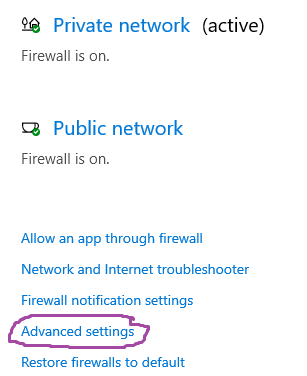
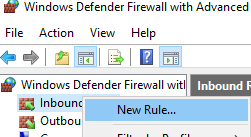
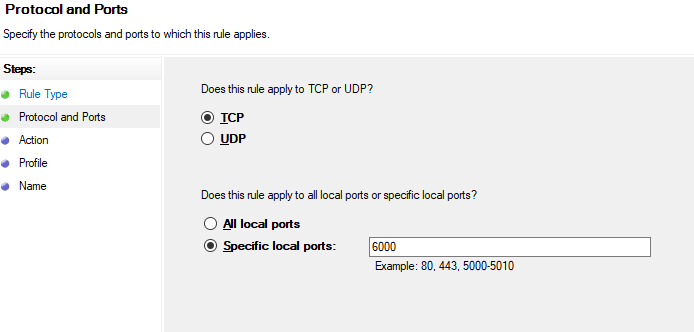
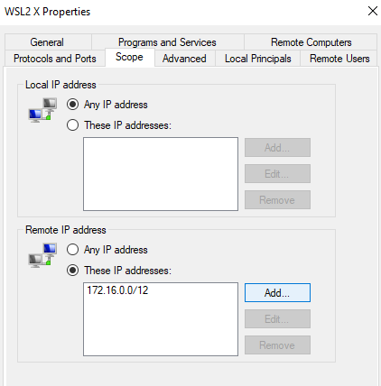
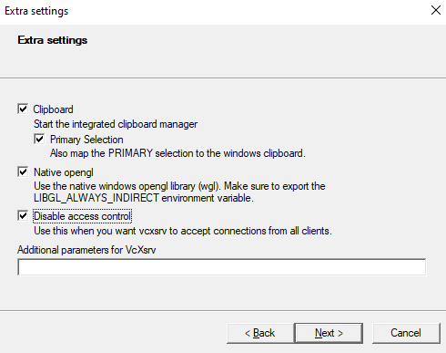

Running an X server with WSL2
I’ve recently started working with WSL2 on my Windows machine, but have had trouble getting an X server to run. This is an issue for me because running Emacs with Evil keybindings under Windows Terminal I often find there’s a lag in registering pressing escape which leads to some confusing issues (but vanilla Vim is fine). But having an X Server would also allows running any Linux graphical application under X.
Windows now provides built-in support for GUI apps in WSL2 which is considerably easier to use and setup than the instructions below.
Only follow the below tutorial if for some reason the WSL GUI experience doesn’t meet your needs.
As outlined in a StackOverflow answer there are three steps to getting this working:
- Enable WSL to access the X server on Windows Firewall
- Enable public access from an X11 Server
- Export the appropriate display variables from Linux
Allow WSL Access via Windows Firewall
WSL2 runs in a Virtual Machine, so network traffic looks like it’s coming from another machine (as opposed to WSL1 where network traffic was local). This means that when we’re trying to forward X from WSL2 to an X Server running in Windows it has to pass through the firewall. We’ll enable this traffic to pass through the firewall, as described in cascadium. This is straightforward but requires a few steps.
Press the Windows Start Button and select “Firewall & Network Protection” (typing until it comes up). Then select “Advanded Settings”.

You may be asked at an Administrator prompt to allow this application to make changes to the system; allow it. Right click on “Inbound Rules” and select the option “Add Rule…”

We’re going to open up Port 6000 for the X Server to communicate on. Under Rule Type select port and then click next. Select TCP Port 6000 and click next. Then click next through windows (allowing the connection and applying to all profiles) until the last screen, and then give it a reasonable name like “WSL2 X Access” and then Finish.

This opens up the port to the whole internet, which is a security risk. We now need to narrow the scope so it’s only open to WSL2.
Find the Rule you just created in the list of Inbound Rules, right click and select “Properties” Click the “Scope” tab, and under “Remote IP Addresses” click Add entering “172.16.0.0/12” under port. Then click Add again entering “192.168.0.0/16” under port. These are local subnets that may be used by WSL2.

Now WSL2, and only WSL2, is able to send network traffic to Windows on port 6000, which we need for X.
Enable public access from an X11 Server
For the X11 Server it appears as if the traffic is coming from elsewhere so we have to enable public access. Using VcXsrv via XLaunch this means checking the “Disable access control” on the “Extra settings” page.

Alternatively you can do this with the -ac command line parameter to the vcxsrv executable. Assuming it’s installed in Program Files you could invoke it from Powershell as follows:
& 'C:\Program Files\VcXsrv\vcxsrv.exe' :0 -multiwindow -wgl -ac -silent-dup-errorThis sets up a multiwindow display using Windows GL with disabled access control, and doesn’t raise an error if this already exists (so it’s safe to run multiple times).
Export appropriate display variables
Finally you need to export the DISPLAY to the corresponding port from Windows, and set LIBGL_ALWAYS_INDIRECT. You can add this to your .bashrc or similar.
export DISPLAY=$(awk '/nameserver / {print $2; exit}' /etc/resolv.conf 2>/dev/null):0
export LIBGL_ALWAYS_INDIRECT=1Now you should be able to run applications.
Making the process smoother
I used this for Emacs 26 under WSL2, and it works perfect after disabling double buffering.
Once it’s configured you can run it directly from Powershell running bash -c 'source ~/.bashrc; emacs'. Note that if you exported the display variables in a local config file like .bashrc.local you have to source that file instead.
You could put this all together into a single shortcut that starts the display and executes the application:
C:\Windows\System32\WindowsPowerShell\v1.0\powershell.exe
-windowstyle hidden
-command & 'C:\Program Files\VcXsrv\vcxsrv.exe' :0
-multiwindow -wgl -ac -silent-dup-error;
"&{ bash -c \"source ~/.localrc; cd; emacs\" }"Alternatively you could even launch a Window Manager and run all your linux applications from there.